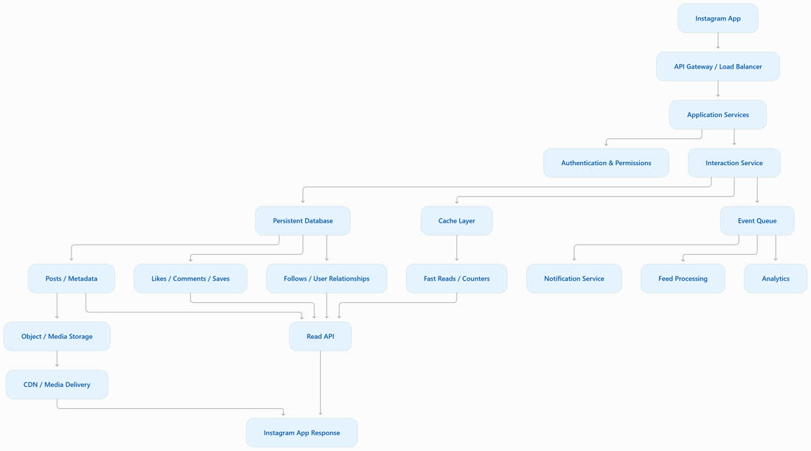
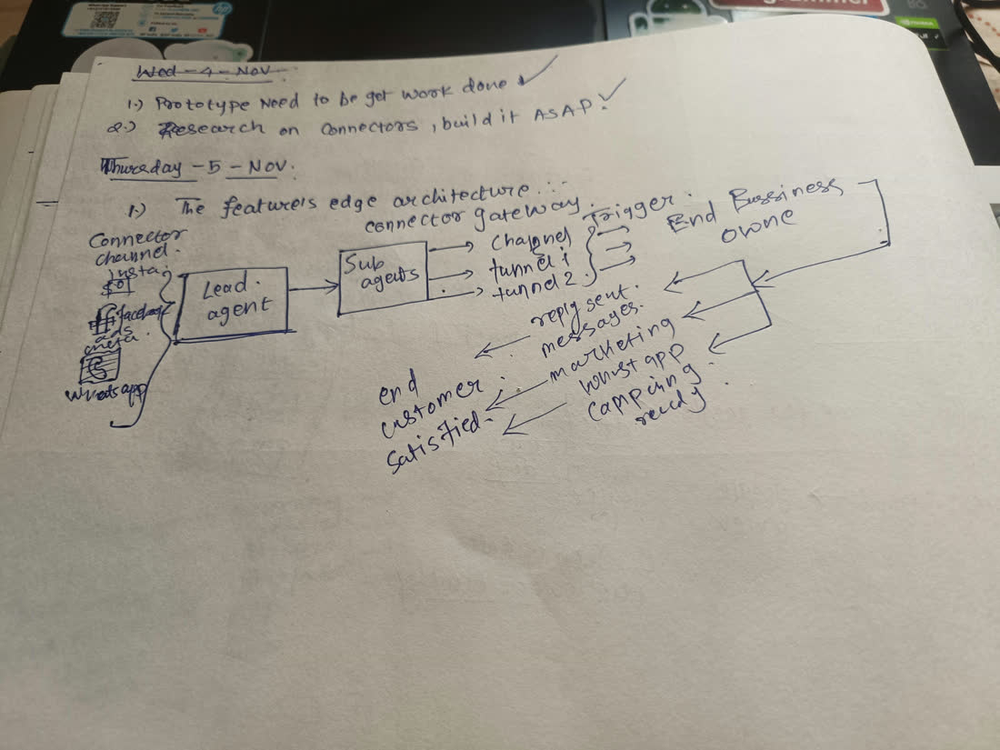
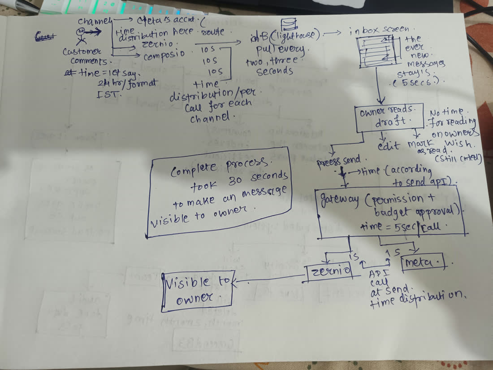
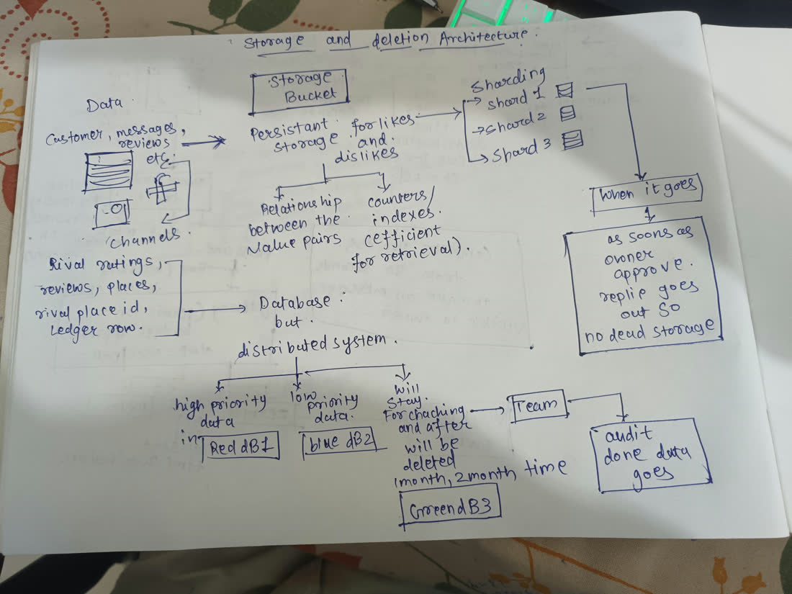

Three paper drawings of the connector gateway, a reference drawn from how Instagram stores likes and comments, and the design both lead to: what to build for the beta now, and what to keep ready for when Swayu grows.
| Decision | Effect on the sections below |
|---|---|
| Build only what the beta needs, sized for beta load (12 businesses in November, 30 in December) | Sections 5, 7 and 9 are the build. Section 8 and the Instagram reference are kept for later and are not built now |
| The beta connector goal: every customer message answered and delivered to the Swayu inbox | Push intake is the first build. Reading likes and detailed numbers waits, and is first checked against what Zernio and Composio offer |
| No in house connectors; no separate plugin repositories | The gateway is code inside Swayu that calls Zernio, Composio and Meta. It is proven in Lighthouse, then moved to swayu-app |
Costs and which provider serves each channel are on the connector budget page: https://claude.ai/artifact/9vGt6KuW5QVrSi5bABXgsZ

Sources: Sharding and IDs at Instagram, Instagram at the SF Postgres group, 2012, Scaling Instagram Infrastructure, QCon SF 2016, Instagration part 2.



tenant_id (rule 10). That is Instagram's logical shard.Messages coming in and calls going out are drawn as two paths. Incoming messages are pushed to Swayu and wait in a queue. Calls going out pass permission, then budget, then one provider. Both paths end in the same Postgres, where every row carries its business.
| What could go wrong | What stops it | Instagram's version | What the owner sees |
|---|---|---|---|
| A lead uses a channel or action it was never given | Cedar decides before any provider is called; a forbid beats any permit | Authentication and permissions service | Nothing goes out that the owner did not allow |
| Fifty calls spend Zernio's 600 a minute in one burst | One budget counter in Postgres, taken in a single conditional update, shared by every app on the team | Rate limits at the API gateway | No sudden "try again later" |
| A monthly report blocks the owner's Send | Priority in the job queue: Send first, new messages next, research last | Async tier for slow work | Send answers at once |
| Ten leads ask for the same read | A read already in flight is shared, by provider, channel, action and arguments | Cache leases: one reader fills, the rest wait | Faster, and a tenth of the cost |
| A retry posts the reply twice | An idempotency key on every send | Unique ids on every write | The customer sees one reply |
| A pushed event arrives twice | The event table refuses a repeated event id | Unique ids on every write | One message, not two |
| Data | Where | Who reads it | When it goes |
|---|---|---|---|
| Customer comment or message text | Postgres, inbox table | Owner, replies lead | Decided by Sujit, 5 November: once replied, the comment moves to a history the owner can open. 30 days after the last reply its text vanishes, like vanishing messages, and the owner is told so at the foot of the history. Who, when, channel and replied stay |
| Google review text and stars | Postgres, inbox table | Owner, replies lead, analytics lead | 30 days, then swept |
| Rival rating and reviews | Not stored | Analytics lead | Read fresh each run |
| Rival place id | Postgres | Analytics lead | While the business exists |
| Ledger row | Postgres | Team, owner in plain sentences | Kept; it is the audit trail (rule 9) |
| Pushed event | Postgres, event table | Arrival probe | 30 days after it arrived. It holds ids and times only, never the text. Built 5 November |
What starts each step is measured, not guessed: database CPU, the slowest inbox query and table size, read from the same ledger and logs. The thresholds are set when the first real numbers exist.
| Build | Why first | Proof it works | Status |
|---|---|---|---|
Webhook intake and event table for Zernio comment.received and review.new | Removes almost all reads, and messages arrive in seconds | A test comment shows in the inbox with its hop times from the arrival probe. On a local server, 5 November: a signed push stored once and answered in 0.09 s, the same event again was dropped, an unsigned push was refused (401); 23 tests. The live test comment waits on the webhook secret in 1Password and in Zernio | Built 5 Nov, live test next |
| Shared budget counter in Postgres | Every app on the team draws from one 600 | Two processes in parallel never pass the limit; a test runs them at once | Next |
| Priority in the job queue | Send never waits on research | A Send queued behind 50 research reads runs first | Next |
| Retention sweep per table | Nothing kept without a clock | A row past its clock is gone after one sweep; a row inside it stays. Built for comment text (clock from the last reply, notice under Answered) and pushed events; 8 tests | Part built 5 Nov |
| Permission per lead, full owner reviews, places stub | Analytics can start on real shapes | 207 tests, two independent reviews, the second said ready | Built 5 Nov |